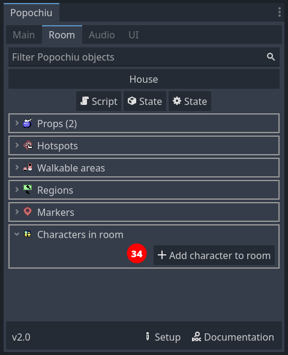
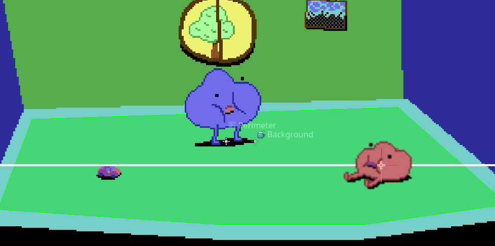
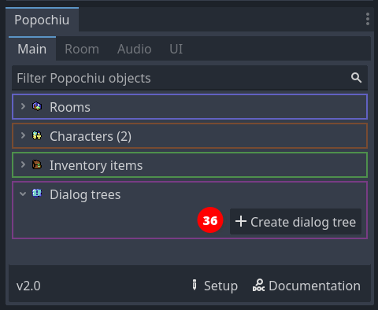
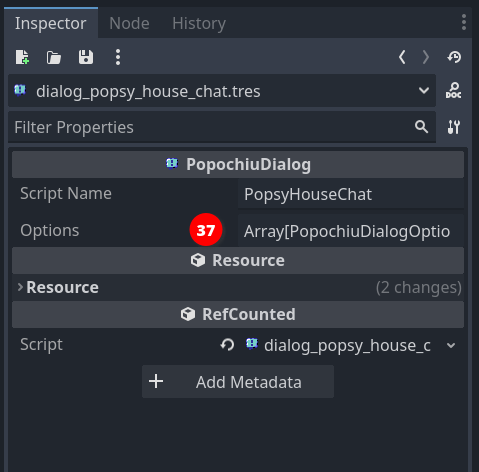
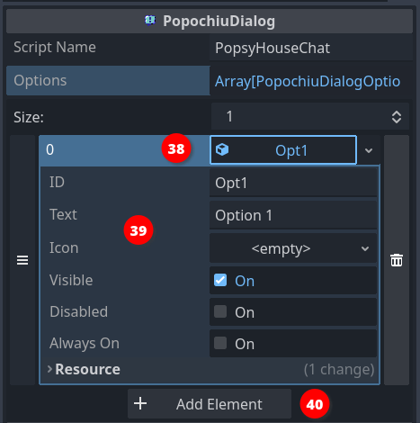
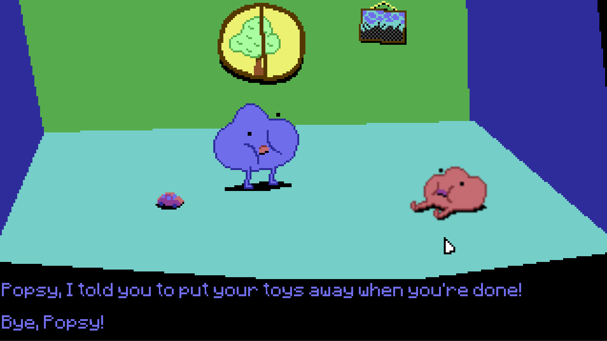
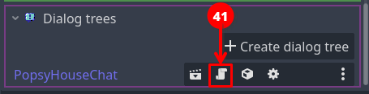

Script your first dialogue
The last very common case we want to cover with this introductory guide is the interaction with another character.
If you followed this tutorial from the start, you should have created two characters. Popochiu adds our main character to the room for us when the game starts, so we don't need to do it manually. On the other hand, as we are the directors of our own game, it leaves us to place non-player characters where they belong.
We will then add Popsy (or whatever you named your secondary character) to our sole room, and script some interactions.
To add the character to the room, click on the Add character to room button in the tab room of the Popochiu dock (34), then select Popsy from the dropdown list.

The character will be added in the center of the scene. Move it somewhere to the right, so the scene looks like this:

Now that we have a character to talk to, let's create our first dialog.
Dialogs in Popochiu are managed by Dialog trees, global objects like characters, rooms and inventory items. Each dialog tree is a catalog of lines that will be shown by the dialog GUI when that specific dialog tree is started. When the user selects one of the lines, a script is triggered. Simple and effective.
Info
Lines in a specific dialog tree can be turned on and off, and you can start a different dialog tree from scripts, so you can branch out of a dialog into another one, and back to writing simple wiring code.
To create a new dialog tree, click on the Create dialog tree button in the main tab of the Popochiu dock (36), and name the new dialog in the popup window that appears.

We'll name our new dialog tree "PopsyHouseChat".
Tip
Keep your dialog tree names clear and meaningful. Medium to large games, with several characters that may appear in different locations, or in different moments along the story, will soon become a mess if every dialog is named like PirateDlg, Dialog1, FirstTalkTentacle or similar.
You may want to find a pattern that makes it easier to remember what's the dialog content, participants and place, like CharacterPlaceTopic or whatever makes sense to you. This will also make the list easier to navigate and will help with autocomplete in scripts.
Now that we have a dialog tree, we want to add options for the player to choose from. To edit the "PopsyHouseChat" dialog tree, click the Open in Editor icon (locate the dialog tree in the main tab list and find the icon on the entry row).
Under the hood
While most of the Popochiu objects we have encountered so far are Godot Scenes, dialog trees are Godot Resources.
Scenes are edited in the "scene preview" area, in the center of the editor. Resources are edited in the inspector, so when you click the Open in Editor icon for a dialog tree, nothing will happen in the center.
Head to the inspector panel and you will see something like this:

To add a dialog option, click the Options property (37), then the Add Element button that appears.
An option named "Opt1" is added to the list (38) (you can see the Size of the Options property is now 1). Click on the Opt1 field to open the drop-down and you should see something like this:

Every dialog option in a tree has many different properties (39):
- ID is a unique handler that will make it easier to manipulate that option from your scripts.
- Text is the text that is shown in the GUI when the dialog is started, and the user is asked to select the options.
- Icon is useful if you want to use an image-based interface for your dialogs instead of a text-based one (an example of this can be found in LucasArts classic Sam & Max Hit the Road)
- Visible is a flag by which you can turn specific options on and off, for example, if you consider a topic explored and no more useful in the context of the game.
- Disabled means this option is "consumed". It is made invisible and can't be made visible anymore.
- Options flagged as Always on can't be disabled. This is useful if you have some bulk logic to disable more options in a dialog tree, and don't want to cherry-pick the important ones in your script. This is also useful to avoid soft-lock situations due to a mistake in a script (it may happen, most of all if you work in a team).
Let's create a first line of dialog about the toy car that Popsy left on the floor. Populate "Opt1" as follows:
- ID:
MessyRoom - Text:
Popsy, I told you to put your toys away when you're done!
Leave the rest untouched.
Create other two options by clicking the "Add Element" button (40) and populate them like this:
- Second option
- ID:
AskBored - Text:
Are you bored? - Visible:
Off(uncheck it)
- ID:
- Third option
- ID:
Bye - Text:
Bye, Popsy!
- ID:
This will do for now. Hit ctrl/cmd-s to save your project and the dialog tree resource.
Tip
It may be useless to say at this point, but keep your options IDs meaningful and "talking" (no pun intended). Find your own conventions, but remember you will have to navigate your dialogs in scripts by these identifiers, so choose names that are love letters to your future self.
To see our dialog in action, we need to start it somehow. In the context of our game, we'll simply start the dialog when we click on our companion character in the room.
Locate the secondary character in Popochiu main dock, and open its script by clicking on the Open in Script icon.
Find the _on_click() function and edit it like this:
# When the node is clicked
func _on_click() -> void:
await C.player.face_clicked()
D.PopsyHouseChat.start()
Run the game and click on the secondary character. Your dialog should start and you should see the first and last options only:

Script a dialog
We have a dialog in place, but so far, no matter which option we choose, the dialog ends abruptly. This is because the script template works like this. We are going to change the script to implement some meaningful dialog.
Go back to Popochiu main dock and open the script by clicking on the Open in Script icon on the dialog tree row (41).

The dialog script contains a small number of functions. The one we are going to change is _option_selected(). As the name implies, it is invoked by the engine when the user selects an option. The engine will pass the selected option as the argument of the function, so we can inspect it and decide what to do.
Let's change the function like this:
func _option_selected(opt: PopochiuDialogOption) -> void:
# Use match to check which option was selected and execute something for
# each one
match opt.id:
"MessyRoom":
await D.say_selected()
await C.Popsy.say("Errr... sorry, I forgot to tidy up!")
await C.player.say("OK, but it's better not to leave toy cars around.")
await C.player.say("Someone can step over them and fall.")
await C.Popsy.say("Can you help me tidy up?")
await E.wait(1.0)
await C.player.say("You little lazy rascal!")
turn_off_options(["MessyRoom"])
turn_on_options(["AskBored"])
"AskBored":
await D.say_selected()
await C.Popsy.say("Yes! I want my toy car!")
"Bye":
await D.say_selected()
stop()
_:
# By default close the dialog. Options won't show after calling
# stop()
stop()
_show_options()
In this function, we are using the match construct of the GDScript language to do something different for each option of our dialogue.
We are going to match against the dialog option ID (we told you that would have come in handy). For each one, we execute a script that in this case works as a short cutscene.
Warning
Please note that the turn_off_options() function takes an array as a parameter. In the example code, we are always passing a one-element array to it. Don't be tricked into feeding it a string.
When the dialog starts, we only have one option (plus the exit line to stop the dialog). This first option starts an exchange that goes for some lines. At the end of the exchange, that option is turned off, and another one is turned on, with a signpost to a possible goal for the player (find the toy car for Popsy).
The scope of this small game is too narrow for this to make sense, but that's an example of how dialogs can be shaped to follow the story flow.
Help! I'm not a developer!
The match keyword is a GDScript powerful tool when you have a single variable that can assume a large number of known values. Basically, you ask the language to inspect the variable and only execute the lines of code that are in the block that is nested inside a specified value.
Since we are matching against the option ID, and we populated the option IDs as strings, we expect that variable to have one of the values we choose at design time.
The _ value at the end is a fallback one. If none of the above matches, this block of code is executed. It's smart to always leave a fallback here, that calls the stop() function because if someone adds an option and forgets to code a block for it, the game won't block.
Tip
This function can grow very long in the case of articulated dialogs. The best option is to create private functions in the dialog tree script to isolate particularly long branches. Of course, don't forget to await for them when you write your call!
The savvy reader may have understood at this point, how powerful this dialog system is. Since you execute a full script when the user selects an option, the sky is the limit here. You may play animations, populate the inventory, change the game state in different locations, trigger cutscenes (flashbacks?), switch the player character, or do something really strange like saving the game during a dialog (hardly seen in point-and-click games, but why not?).
Other engines describe dialogs as declarative, nested lists of lines that the characters can say. Popochiu takes a more dev-oriented road and leaves the developer in total control.
We're almost done. Since Popsy wants its toy car, let's make it happy!